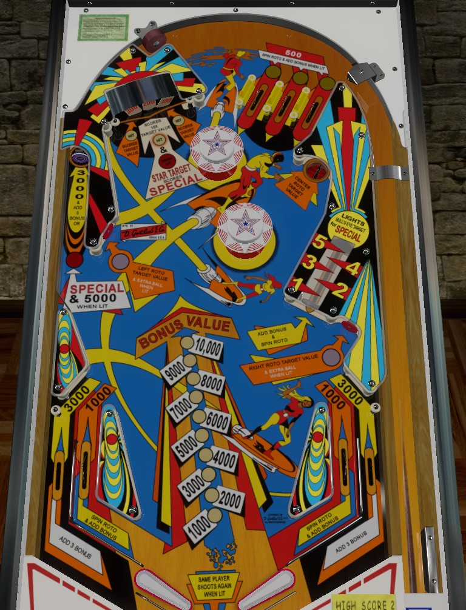

Jet Spin is the 4-player version. Super Spin is the otherwise identical 2-player version.
Go-to shots on Jet Spin are generally the center panel of the roto-target in the top left, and the saucer in the top right. If the return feeds from the dead-end lane on the left or the vary-target are friendly, you may wish to use those to build bonus early in the ball before transitioning to the roto-target and upper right saucer.
All lanes score 500 points. Lit lanes also advance the bonus and spin the roto-target. If the bonus count is odd, the two outer lanes are lit. If the bonus count is even, the middle lane of the three will be lit.
The roto-target features various panels reading 100, 200, 300, 400, 500, or Star. Hitting a panel in the left or right position scores the value listed on that panel. Hitting the panel in the center position scores 10 times the listed value, plus 1, 2, 3, 4, or 5 bonus advances respectively. The Star acts as a duplicate 500 panel, but if the Star is in the center position and the end of ball bonus is maxed out at 15,000 points, hitting the Star awards a special.
Score 100 points in a 5-ball game and 1,000 points in a 3-ball game.
Scores the entire value of the center roto-target panel, including the 10x points, the bonus advance, and the special if lit and applicable.
Scores 3,000 points and 3 bonus advances. Registering a full shot to the vary-target lights the next shot to the dead-end lane for 5,000 points and a special, but no bonus advance.
The vary-target is labelled with numbers 1 to 5. Vary-target shots score 1 bonus advance and 100 points per level registered (or 1,000 points per level in a 3-ball game). A shot that goes just beyond the number 5 lights the dead-end lane's target for a special.
The middle-left target scores the value of the left roto-target panel, and is lit for extra ball when the base bonus is exactly 6,000 points. The lower right standup target scores the value of the right roto-target panel, and is lit for extra ball when the base bonus is exactly 4,000 or 8,000 points. There may be other bonus values where extra balls are lit that only apply to a 3-ball game, but I have not confirmed this.
Jet Spin has a conventional in/out lane setup. In lanes score 1,000 points, a bonus advance, and a spin of the roto-target. Out lanes score 3,000 points and 3 bonus advances.
Max bonus is 15,000 points. There is no bonus multiplier. Most features advance bonus in some way as described in previous sections.